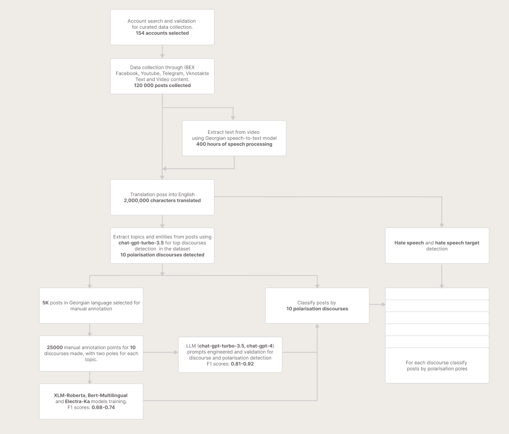

Exploring Political Polarization in Georgia: A Social Media-Based Analysis of Key Discourses and Contributing Factors using LLMs
Methodology
Abstract
This investigation delves into political polarization in Georgia, examining social media discourses and influential factors using machine learning methodologies grounded in language models. In line with the European Union's recommendations to the Georgian government, the study aims to monitor and assess the country's efforts to decrease polarization as part of its EU integration process. We amassed a dataset of 120,000 posts from 154 social media accounts linked to diverse political parties, originating from four leading platforms. By dissecting ten primary polarization discourses, we scrutinized opposing narratives fueling polarization. We applied 42,000 annotation points from 5,000 distinctive posts to develop and validate text classification models. The study employed three pre-trained models—BERT-Multilingual, XLM-RoBERTa, and Electra-Ka—for accurate classification and analysis of Georgia's political polarization discourse and narratives.
Introduction
Since its independence, Georgia has consistently expressed its European aspirations, which are enshrined in the Georgian Constitution and supported by the country's citizens and political spectrum. The Georgian government's commitment to progress on its European path is exemplified by its initial intention to submit an EU membership application in 2024. In response to the European Union's recommendations, this study aims to monitor Georgia's efforts to reduce political polarization, a critical aspect of the country's integration process. By analyzing social media discourses and key factors contributing to polarization, we hope to provide valuable insights into Georgia's progress toward meeting the EU's expectations and fostering a more inclusive and cooperative political landscape.
Methodology and Data Collection
The methodology employed in this study involved a thorough examination of data collected from diverse social media accounts associated with various political parties and their members. In total, 154 public accounts were carefully monitored using a rigorous selection process, which facilitated the analysis of political polarization in Georgia. The dataset encompassed posts published between 2021 and March 2023, amounting to 120,000 posts extracted from four major social media platforms: Facebook, YouTube, Telegram, and Vkontakte. This comprehensive approach to data collection allowed for a wide-ranging perspective on Georgia's political landscape, ensuring a balanced representation of political opinions and ideologies.
Political parties covered in the study:- ● Georgian Dream
- ● United National Movement
- ● For Georgia
- ● Girchi
- ● Girchi More Freedom
- ● For People
- ● Strategy Agmashenebeli
- ● LELO
- ● DROA
- ● European Georgia
- ● Mokalakeebi
- ● Conservative Movement
- ● People's Power
- ● Alliance of Patriots
- ● Labour Party
- ● ERI
Polarisation discourses
In our analysis, we identified ten key discourses of polarization within Georgia's political landscape, leveraging topic labeling and entity extraction techniques. For each discourse, we selected two opposing narrative groups to comprehensively examine the diverse perspectives driving polarization. The selected discourses include:- ● The 2008 August war between Russia and Georgia
- ● The conflict between Russia and Ukraine
- ● Georgia's role in the conflict between Russia and Ukraine
- ● The custody and treatment of Mikheil Saakashvili
- ● The confrontation between liberal and conservative values
- ● Pro-Western versus Anti-Western foreign policy
- ● Pro-Russian versus Anti-Russian foreign policy
- ● The role of NGOs in the country's political processes
- ● Media independence and the role of media in political processes
- ● The influence of oligarchs in political processes
Polarisation Poles
Mikheil Saakashvili's custody and treatment
Pro-Western or Anti-Western foreign policy
Pro-Russian or anti-Russian foreign policy
Oligarchs and their role in political processes, who is the oligarch
By examining these discourses, we aim to provide a comprehensive understanding of the complex dynamics shaping political polarization in Georgia and the underlying factors driving these divisive narratives.
Two additional discourses Law against foreign agents, and Sanctions against Gororgian Court members, will be added in the next phase of the study.
Data Annotation
To facilitate a robust data annotation process, 26 master's students from Tbilisi State University and ILIA University, with a focus on Political and Social studies, were chosen to partake in the text annotation exercise. This exercise produced a total of 42,000 annotation points, addressing 5,000 unique posts from the collected dataset. To guarantee the quality and reliability of the annotated text examples, each post was independently annotated by four distinct annotators. This strategy minimized the risk of bias or misinterpretation, leading to a more objective analysis. The annotated examples were then used to train the text classification models, as well as to validate the accuracy of the discourse and narrative prediction models, thus reinforcing the rigor and robustness of our research framework.
Classification Models
For effective text and entity classification, we selected three pre-trained models: BERT-Multilingual, XLM-RoBERTa, and Electra-Ka. These models were fine-tuned using a multi-class, multi-label architecture, employing the collected dataset to optimize performance for our specific task. The table below outlines the scores for the model training exercises, offering a thorough understanding of the process and its outcomes.
Discussion and Implications
The findings of this study provide a comprehensive understanding of the complex dynamics shaping political polarization in Georgia, including the key factors driving these divisive narratives. By examining the identified discourses and opposing narrative groups, we have illuminated areas where cooperation and collaboration between political parties can be encouraged, as recommended by the EU.
Our analysis reveals that Georgia has made some strides in addressing political polarization, with tangible progress evident in specific discourses. However, further efforts are needed to ensure robust cooperation and mutual understanding across the political landscape. The country's ongoing commitment to EU integration requires addressing the root causes of polarization, fostering a more inclusive political environment, and strengthening democratic institutions.
Conclusion
This research offers valuable insights into Georgia's political polarization, delving into discourses and influential factors through a social media-based analysis. By leveraging state-of-the-art language models and machine learning methodologies, we were able to examine a comprehensive dataset spanning multiple platforms and political parties. Our findings underscore the importance of continued efforts in reducing political polarization in Georgia, aligned with the EU's recommendations, to facilitate the country's integration process and promote a more inclusive political climate. This study provides a solid foundation for future research on Georgia's political landscape and serves as a useful model for analyzing polarization in other contexts.
Data flow
First Phase Results
The study was conducted in two distinct stages, with each stage focusing on different discourses and timeframes. During the first stage, we concentrated on four polarization discourses, analyzing social media data from January 1st, 2023, to April 1st, 2023. This phase laid the groundwork for understanding the emerging trends and patterns of polarization in the Georgian political landscape.
In the second stage, which is currently planned, we aim to expand the scope of our analysis by including all 12 polarization discourses. Furthermore, we intend to incorporate transcriptions from video content and broaden the dataset to cover a more extensive timeframe, spanning from January 1st, 2021, to June 1st, 2023. This comprehensive approach will enable a deeper exploration of the intricacies of political polarization in Georgia, providing valuable insights into the underlying factors that contribute to its persistence. By analyzing an extended period, the second stage will offer a better view of polarization dynamics over time, illuminating how these discourses have evolved and their potential impact on Georgia's political climate.
Pie Chart Legend
Switch between loarothmic And linearNumber of posts per discourse
The size of the stroke represents the number of posts per discourse
Logarithmic scale is used to supress high values, and make it possible to explore charts with low values
Use switch to change betwen logarithmic and linear scales
blue part of the arc represents the number of postes for Pole A, gray part of the arc represents neotral polarity posts number, ones that do not fit not into pole A neither to pole B , and red part of the arc represents the number of postes for Pole B
Engagement
Engagement per pole is represented by radius of sector, larger the radius more engagement the pole hase. The median engagement per post in the dataset is 644 engagement actions per post
Positive, Neutral and Negative Engagement per pole
Engagement per pole is represented by radius of green, gray and red segments of the sector, longer the radius more engagement the pole hase. The median positive engagement per post in the dataset is 415 engagement actions per post, The median neutral engagement per post in the dataset is 153 engagement actions per post, The median negative engagement per post in the dataset is 48 engagement actions per post,
Numerical values
Time Series Data
Data below represents the dinamics of polarisation discourses and corresponding engagements.
Blue area corresponds to the number of posts with pole A
narative
Gray area corresponds to the number of posts with neutral
narative
Red area corresponds to the number of posts with pole B
narative
The bars on the chart represents the engagement for the posts
Dark blue part of a bar corresponds to pole A, positive
engagement
Lighter blue part of a bar corresponds to
pole A, neutral engagement
The lightest blue part of a bar corresponds
to pole A, negative engagement
Dark gray part of a bar corresponds to neutral pole, positive
engagement
Lighter gray part of a bar corresponds to
neutral pole, neutral engagement
The lightest gray part of a bar corresponds
to neutral pole, negative engagement
Dark red part of a bar corresponds to pole B, positive
engagement
Lighter red part of a bar corresponds to
pole B, neutral engagement
The lightest red part of a bar corresponds
to pole B, negative engagement
Mikheil Saakashvili's custody and treatment
Posts distribution and engagement
- The size of the circle corespondes to engagement for the posts
Pro-Western or Anti-Western foreign policy
Posts distribution and engagement
- The size of the circle corespondes to engagement for the posts
Pro-Russian or anti-Russian foreign policy
Posts distribution and engagement
- The size of the circle corespondes to engagement for the posts
Oligarchs and their role in political processes, who is the oligarch
Posts distribution and engagement
- The size of the circle corespondes to engagement for the posts

Authors
Davit Janezashvili - Data Scientist and Founder at Mettamine djanezashvili[a]gmail.com
Emillie V. de Keulenaar - PhD at RUG and Research Consultant at UN Innovation Network. Digital Democracies GroupUniversity of Amsterdam. Nederland.
Lia Chkhetiani - MA Candidate in Political Science at CEU, Vienna, Austria
This Publication has been produced with the support of Center for Strategic Research and Development of Georgia (CSRDG) in frames of the European Union (EU) and Konrad-Adenauer-Stiftung (KAS) funded project
‘Civil Society STAR Initiative: CSOs as Sustainable, Transparent, Accountable and Resilient Development Actors in Georgia’. Its contents are the sole responsibility of Mettamine and do not necessarily reflect the views of the European Union or Konrad-Adenauer-Stiftung.
The project is implemented by the Consortium led by the Konrad-Adenauer-Stiftung (KAS) and composed of the following CSOs: Center for Strategic Research and Development of Georgia (CSRDG), Civil Society Institute (CSI), Center for Training and Consultancy (CTC), Education Development and Employment Center (EDEC), and Institute for European Politics (IEP).